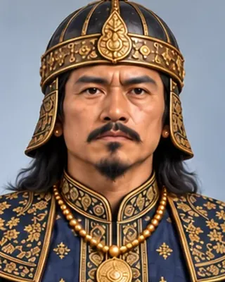

c. 1555
সুখাম্ফা (খোৰা ৰজা)
1552–1603 · Sixteenth Ahom king

Longest-reigning Ahom king (about 51 years). Chilarai's 1563 invasion forced the Treaty of Majuli. The Ekasarana faith took firm root in his reign.
Nicknamed Khora Roja after a limp from an elephant fall.
Record confidence: high.